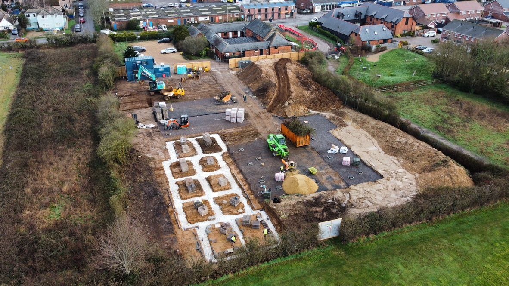
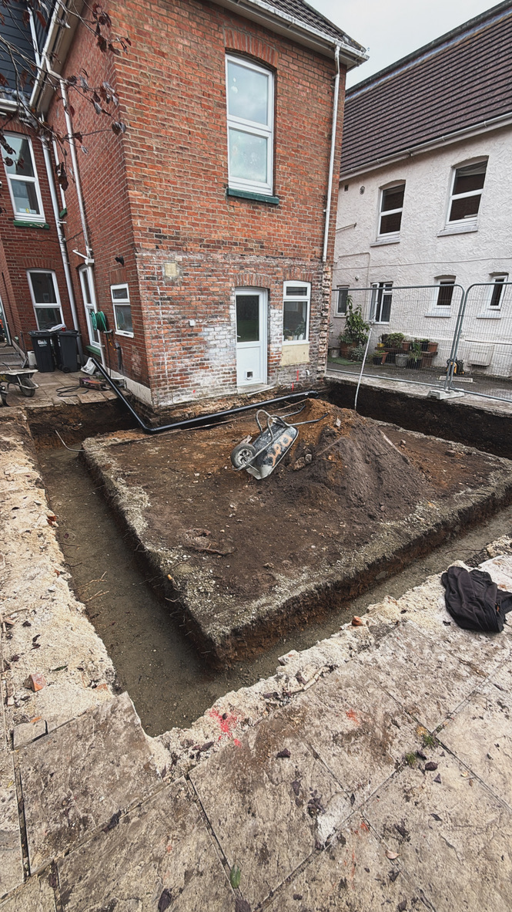
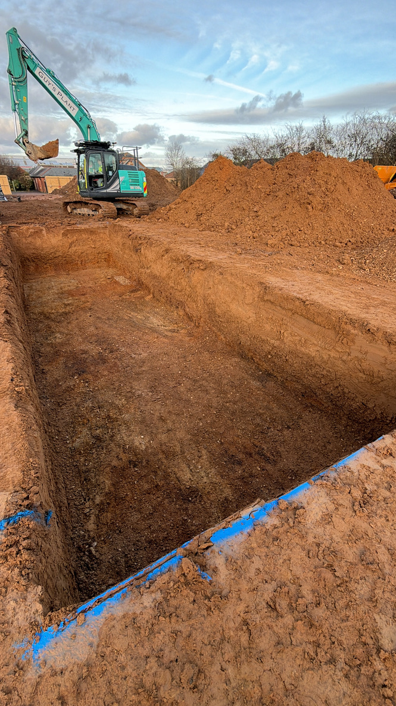
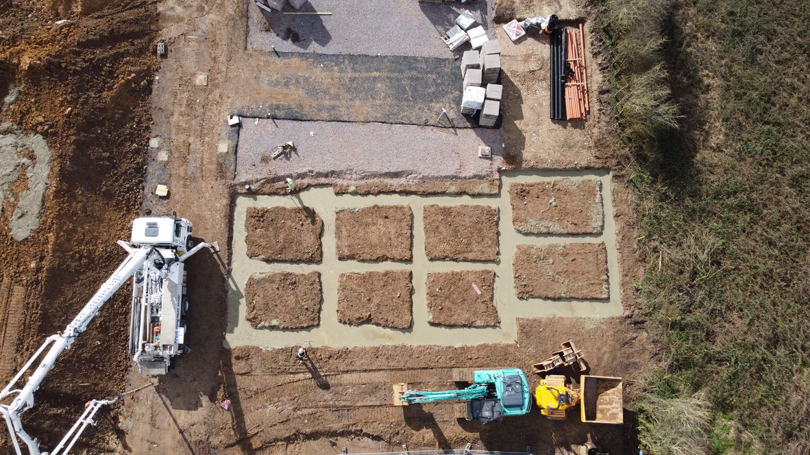
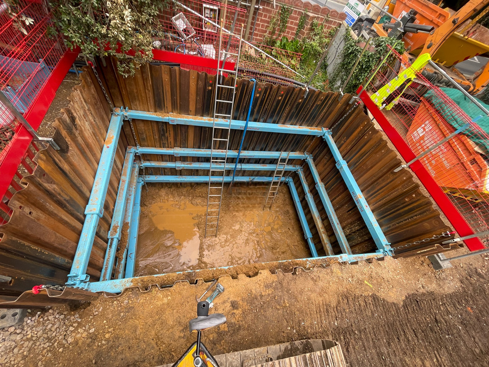
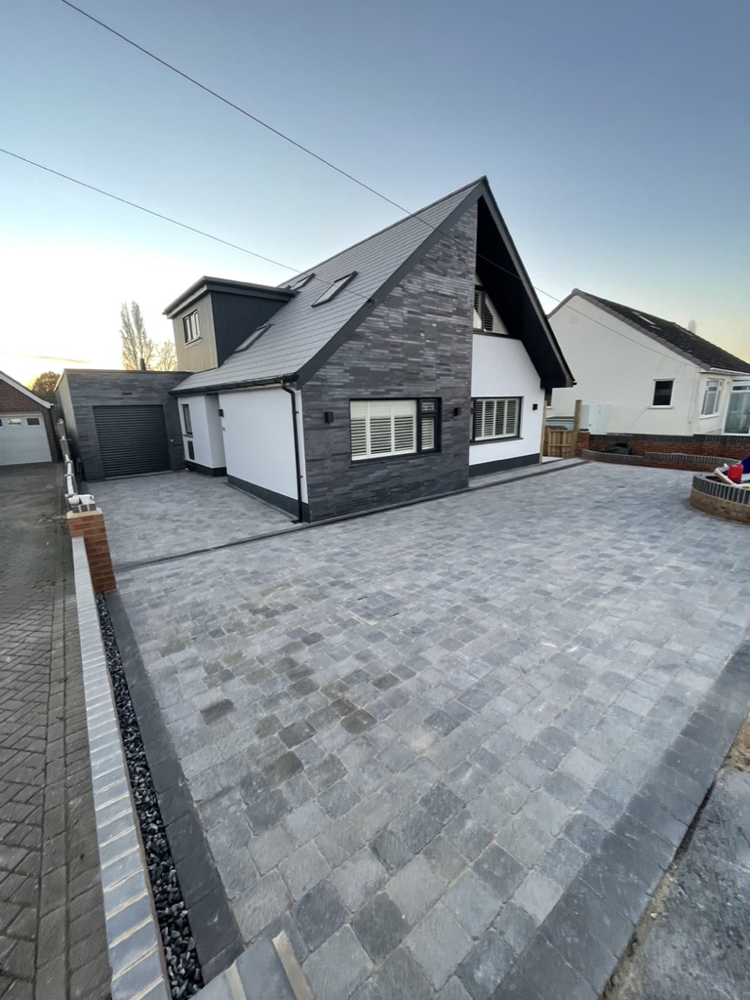
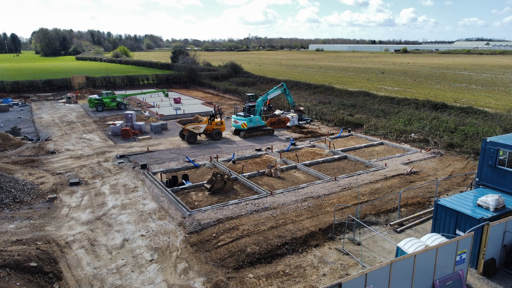

A complete groundworks and civils service for domestic and commercial projects across Bournemouth, Poole, Christchurch and the wider Dorset area — every stage handled to the highest standard.

We partner with builders, developers and main contractors to deliver complete commercial groundworks and civils packages — earthworks, drainage, foundations and external works under one reliable team, taking care of the ground from first dig to handover and keeping your project on programme.
Larger sites demand planning, compliance and a contractor who actually turns up. We work to drawings and specification, manage health and safety properly on site — including shored deep excavations and working at depth — and have the plant and manpower to deliver at scale. Fully insured and dependable, we're a groundworks partner you can build a programme around.

No job is too small. Alongside our larger projects, we happily take on the domestic works other groundworks firms often turn down — footings and foundations for extensions, garage and outbuilding bases, garden and retaining walls, drainage repairs and small concrete slabs. Same care, same standards, whatever the size of the job.

Every project starts with the groundwork. We handle excavation, dig-outs, reduced-level digs, muck away and full site clearance — using the right plant for the job and leaving a clean, level site ready for the next stage. From domestic gardens to large commercial plots, dug right first time.

Strong, accurate foundations are the backbone of any build. We install footings, foundations, oversites, slabs and reinforced concrete bases to specification — giving your project a solid, reliable base to build on.

Get water management right and you'll never think about it again. We design and install soakaways, land drainage, foul and surface water systems and French drains. We also specialise in deep drainage and below-ground installations — including sewage treatment plants, pump stations and storage tanks — working safely at depth within fully shored excavations using steel sheet piling and trench box support systems. Every job is done to spec, signed off, and built to last.

From domestic driveways and patios to commercial car parks, pathways and access surfacing, we deliver the external works that finish a site properly — smart new block paving, an upgraded driveway, a low-maintenance patio or hard-wearing surfacing for a commercial yard, handled from dig to finish.
The difference is in what you don't see: every surface is correctly excavated, with the right sub-base and edge restraints laid to specification, so it stays level, drains properly and lasts for years rather than sinking or cracking. We work in block paving, tarmac and natural stone, with kerbing, edgings and hard landscaping to match.

Tell us about your site and we'll get you a clear, honest quote.